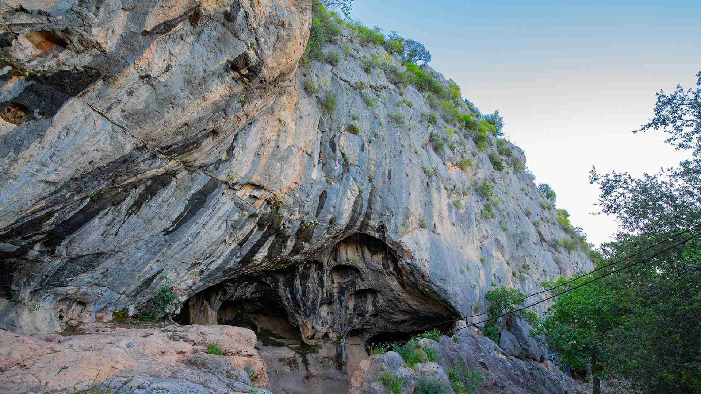
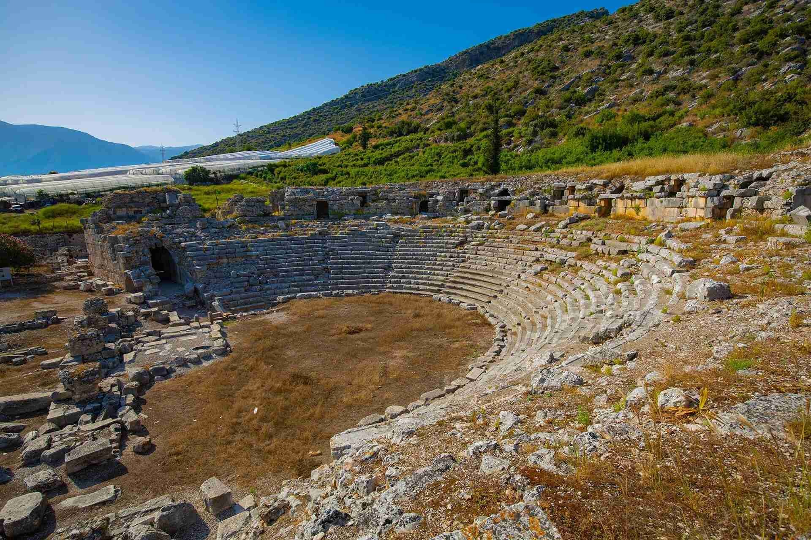
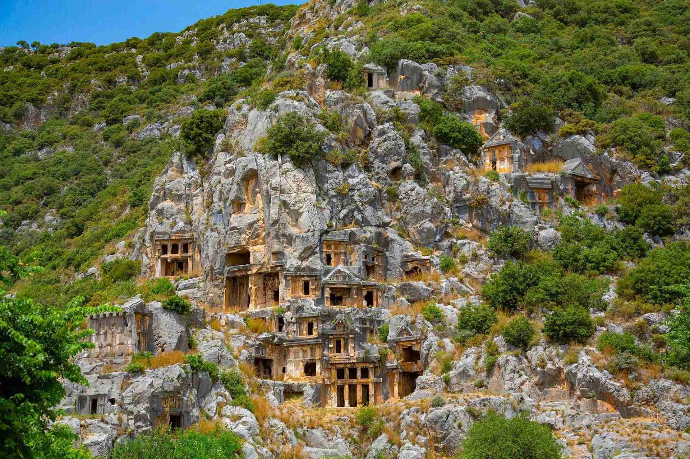
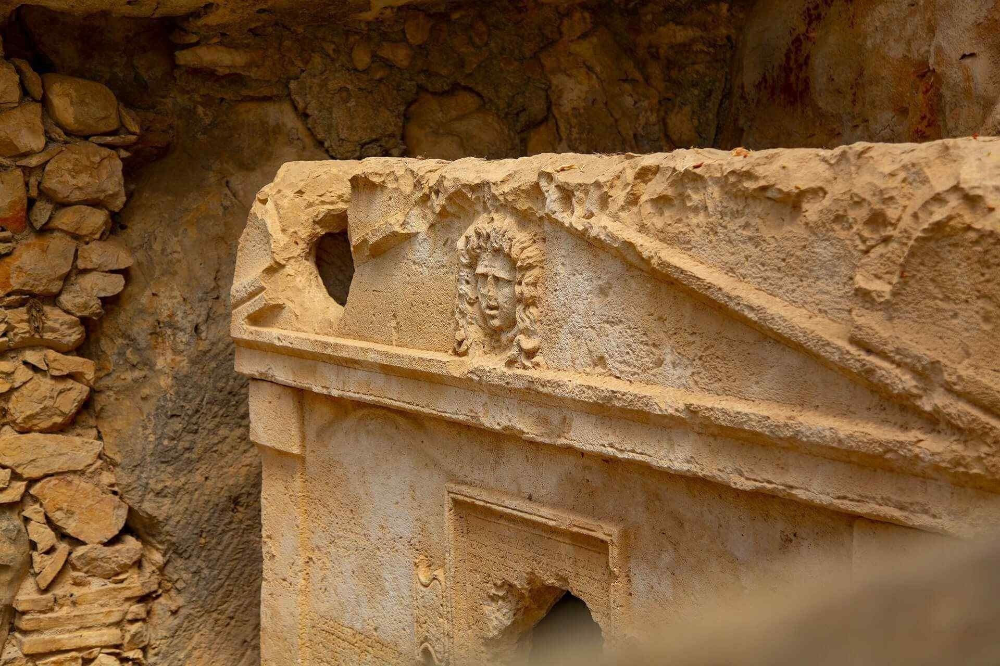

Şehirler
|
ANTALYA ÖREN YERLERİ |
|  |
Karain Mağarası
Karain, Antalya'nın 30 km. kuzeybatısında, Merkeze bağlı Yağca Köyü sınırları içinde, Katran Dağının doğusunda yer alan Türkiye'nin en büyük doğal mağaralarındandır. 1946 yılından bu yana bilimsel kazıların yapıldığı mağaranın, günümüzden 500.000 yıl kadar önce yerleşke olarak kullanıldığı anlaşılmıştır.Karain Mağarası, Türkiye ve Yakın Doğu tarihi açısından önemli bir Paleolitik merkezdir. Karain Mağarası'nda yapılan kazılarda Alt Paleolitik Çağ’dan Geç Roma Dönemi’ne değin uzanan büyük bir zaman dilimine referans sunan bulgular elde edilmiştir.
|
|  |
Limyra Ören Yeri
Antalya İli, Finike İlçesi, Saklısu Mahallesi sınırlarında yer alan Limyra Antik Kenti, Toçak Dağı’nın güney eteklerinde, erken dönem yapıların yer aldığı Akropol ile onun hemen güneyinde, şimdi karayolu ile ayrılan düzlükte Roma ve Doğu Roma (Bizans) Dönemi surları içinde kalan alanı kapsamaktadır.Limyra'nın adı, Likçe yazıtlarda "Zemuri" olarak geçmektedir. Bu durum şehrin en azından MÖ 5. yy’dan itibaren yerleşim gördüğünün kanıtlamaktadır.
|
|  |
Myra Ören Yeri
Bugünkü Demre İlçe merkezinde ve civarında yer alan Myra Antik Kenti, aynı adı taşıyan ova üzerinde kurulmuştur. Myros nehrinin (bugünkü Demre Çayı) batısındaki ulaşıma elverişli kanal ile şehrin denizle bağlantısı sağlanmaktaydı. Kanalın diğer yanında yer alan Andriake (Çayağzı) limanından da bölgenin deniz ulaşımı ve ticareti yürütülmekteydi. Myra Antik Kenti özellikle Likya Dönemi kaya mezarları, Roma Dönemi tiyatrosu ve Bizans Dönemi Aziz Nikolaos Kilisesi (Noel Baba) ile ünlüdür.
|
|  |
Olympos Ören Yeri
Antalya'nın güney sahillerinde Phaselis'ten sonra bir başka önemli liman kenti Olympos'tur. Kuruluş tarihi bilinmemekle birlikte, MÖ 167-168 yıllarında basılan Likya Birlik sikkelerinde adı geçen Olympos, Birlik içinde üç oy hakkına sahip 6 şehirden biridir. Birlikte, Likya’nın doğusunu temsil etmiştir. Kentin günümüze ulaşmış kalıntıları; Helenistik, Roma ve Doğu Roma (Bizans) dönemlerine aittir.
Olympos Limanı, tarihte korsan yatağı olarak bilinir. Kilikyalı korsanların başı Zeniketes, şehri üs olarak kullanmıştır. Böylelikle "Mitras Kültü" de şehre yerleşmiştir ki, bu doğu kökenli olan yaratıcı Işık Tanrısı kültüdür.
| |
|
|
|